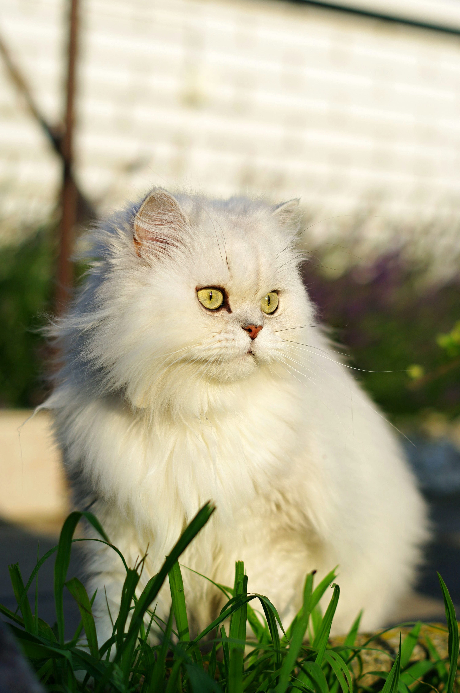
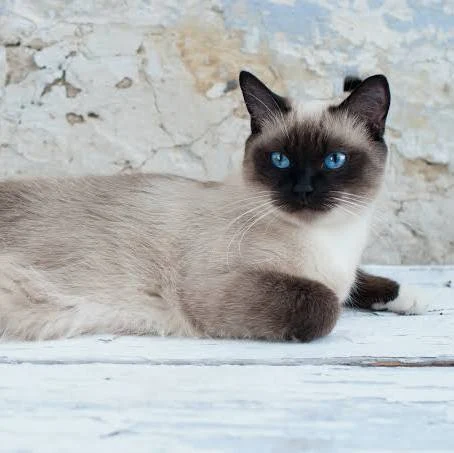
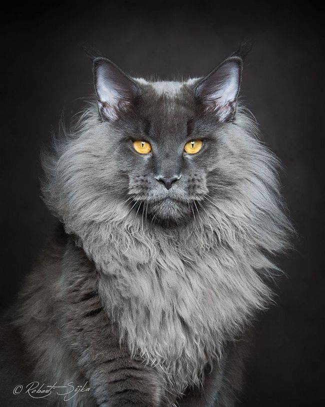
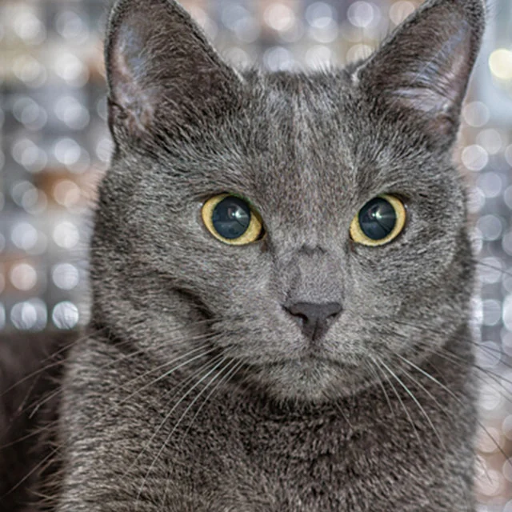

Raças de Gatos
-
Persa:
Persa é uma raça de gato doméstico originária do Irã, antiga Pérsia. É conhecido por sua aparência chamativa, de muita pelagem e focinho achatado.
 -
Siamês:
Siamês é uma raça de gato oriental, caracterizada por um corpo elegante e esguio e uma cabeça marcadamente triangular.
 -
Maine Coon:
Maine Coon é uma raça de gato originária do nordeste dos Estados Unidos. É considerada a raça de pelo mais antiga, além de ser a maior de todas as raças de gato do mundo.
 -
Birmanês:
É uma raça de gato doméstico originária da Birmânia, que se acredita ter suas raízes perto da fronteira entre a Tailândia e a Birmânia

-
Azul Russo:
É uma raça de gato que tem um pelo azul-prateado. São relativamente inteligentes e brincalhões, mas tendem a ser tímidos com estranhos 
Cores de gatos
Top Curiosidades
- Um gato passa cerca de 12 a 16 horas por dia dormindo. Isso os torna um dos mamíferos mais preparados para longas jornadas de sono.
- A maior parte das fêmeas felinas é destra, enquanto os machos são canhotos.
- Apesar de não conseguir correr distâncias muita longas, gatos são excepcionalmente rápidos: eles conseguem correr a até 49 km/h.
- Assim como as impressões digitais de humanos, cada gato tem um nariz que é único.
- Por serem muito sensíveis a sons e vibrações, um gato pode perceber um terremoto com até 15 minutos de antecedência.
Você sabia que gatos possuem 53 vértebras, por isso é um animal altamente flexível em relação aos humanos, que possuem apenas 34 vértebras. E que eles não tem clavícula. Por conta disso consegue passar por qualquer lugar em que sua cabeça passe. Incrível né?
Gatos Famosos
| Nome | Onde viveu | Porque é famoso |
|---|---|---|
| Sam, o Inafundável | Alemanha | Sobreviveu a três naufrágios durante a Segunda Guerra Mundial. |
| Creme Puff | Estados Unidos | Foi a gata mais velha de todos os tempos, morrendo com 38 anos |
| Choupette | Alemanha | É herdeira da fortuna milionaria do estilista alemão Karl Lagerfeld |
| Copycat | Estados Unidos | Foi uma gata clonada, que surpreendeu por não ser parecida com a gata original |
| Esses são alguns dos gatos mais famosos da história! | ||